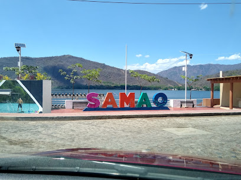
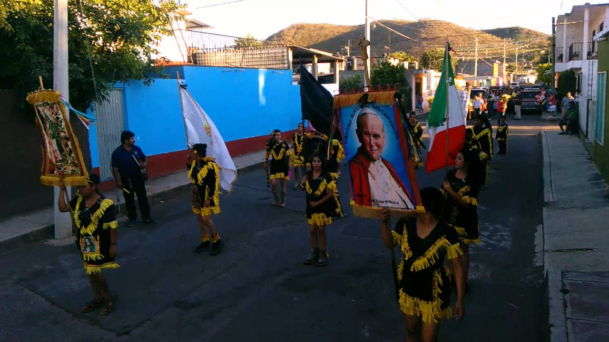
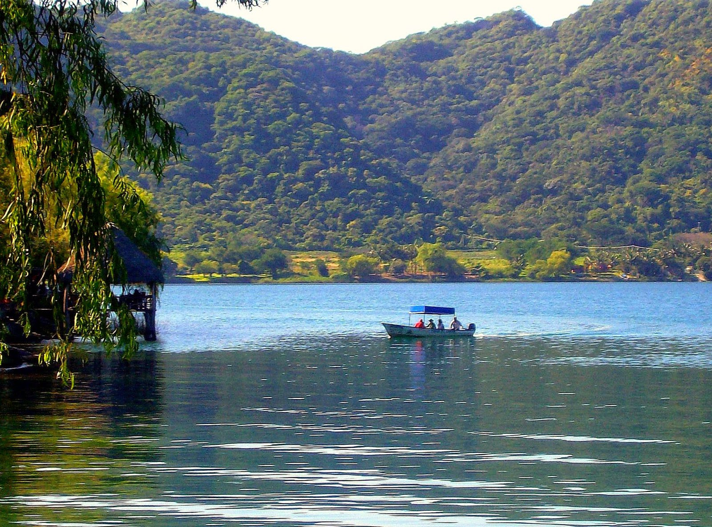

Santa María del Oro es un municipio situado en la región occidental de Nayarit, México. Limita al norte con el municipio de Tepic, al sur con el municipio de Jalisco, al este con el municipio de La Yesca, y al oeste con el municipio de Bahía de Banderas. Es conocido por su hermosa laguna y su naturaleza exuberante.
Las fiestas más importantes de Santa María del Oro son las celebraciones en honor a la Virgen de la Asunción, que se llevan a cabo en agosto, con una gran festividad religiosa, música y danzas tradicionales. También se celebran eventos en honor a San Sebastián, el patrón del municipio, el 20 de enero.
La economía de Santa María del Oro está principalmente basada en la agricultura, con la producción de maíz, frijol, caña de azúcar y algunas hortalizas. También es una zona ganadera, destacando la cría de ganado bovino. La pesca es relevante en la región debido a la presencia de la laguna, siendo un lugar ideal para la pesca deportiva.
